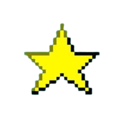

re:GHOST
re:DUST
re:PUMP
OS Enterprise

ATOMIC
Start
Command Prompt - re:GHOST
X
Command Prompt - re:DUST
X
Command Prompt - re:PUMP
X
Windows Media Player - OS Enterprise
X
Windows Media Player - ATOMIC
X